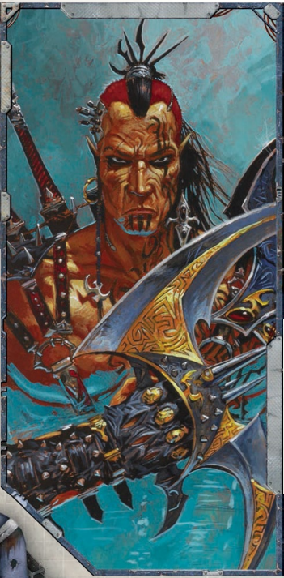
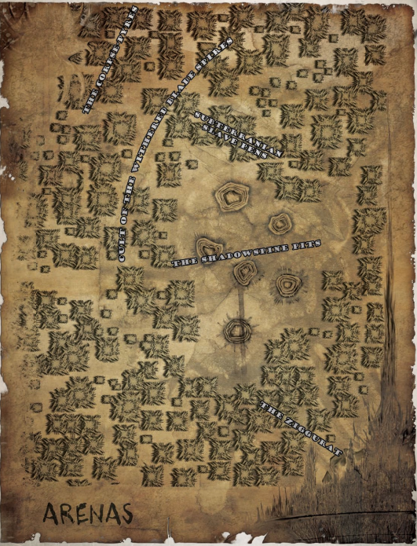

一旦探险者被黑暗灵族俘虏，他们便被送往影脊竞技坑，交由安雅拉和枯刃斗教看管。德雷卡鲁斯对他们如此轻蔑，甚至没有审问他们，因为他已经从阴影枢纽外的间谍那里得知了他们与萨莱恩的牵连。由于过度自信，他无法想象他们如何能对他的权力构成威胁，尽管他们已经如此接近偷取灵魂掠夺者。因此，在他们被带离金字塔后，探险者们与其他新到的奴隶一起被扔进竞技坑，交由安雅拉用于她的血腥运动。在那里，他们被关在围栏中，等待枯刃斗教的领袖决定他们的命运以及他们即将开始的对黑暗灵族服侍的新生活。当他们第一次进入或在枯刃斗教的监禁中醒来时，朗读或转述以下内容：
你们被缴去武器和其他财物，戴上镣铐，与数十名其他人类和异形一起被拖入一个巨大的露天坑中，周围环绕着一圈锈迹斑斑的带血尖刺。你们身上仍带着与德雷卡鲁斯和他的战士们战斗留下的伤疤，至少在目前，你们处于黑暗灵族枯刃斗教的掌控之中。当这群囚犯不安地移动和低语时，其他一些人向你们投来偷偷的目光，注意到你们王朝的徽记和服饰。一个黑暗的影子突然在坑边移动。站在你们上方的是一个飘渺的女性黑暗灵族身影，她雪白的皮肤与黄铜色、蓝绿色和黑色的盔甲以及她那双无魂之眼的冰冷黑暗形成鲜明对比。就在你们注视时，她的眼睛扫过蜷缩的奴隶人群，最后落在你们和你们的同伴身上。
在她决定如何处置探险者之前，安雅拉想要测试他们的能力，看看他们是否能在竞技场中上演一场好戏，或者他们是否拥有枯刃斗教可能利用的其他才能。探险者脱颖而出，并因其潜力和技能迅速与其他奴隶分开。被带进影脊竞技坑的大多数人几乎只适合做体力劳动（那种黑暗灵族绝不会自降身份去做的劳动）或作为尖叫袋在竞技坑中流血而死。尽管人类拥有明显的缺陷，安雅拉对天赋有很好的眼光，对那些有潜力在竞技场中上演精彩表演的人也是如此，她在探险者身上看到了这些品质并想要测试。
当安雅拉与探险者会面时，她只对他们为她的斗教在游戏中的表现能力感兴趣。她对探险者可能策划的任何阴谋都不感兴趣，对他们与萨莱恩的关联也只是表现出短暂的好奇，她认为萨莱恩与扎尔加恩不相上下，但如果危及她自己的地位，她也没有兴趣支持。探险者们在进入她的竞技场之前是什么身份都无关紧要（如果他们试图向她宣扬他们的高贵血统，她会提醒他们这一点），她只根据他们在战斗中的价值来关注他们。
主持人指导：扮演安雅拉
安雅拉领导着枯刃斗教，掌管着它的竞技场和那些在那里战斗的战士（无论自愿与否）。自萨莱恩仍在阴影枢纽掌权之时起，安雅拉便一直控制着其大部分奴隶的培育和流通。一个奴隶看到的第一个地方（通常也是最后一个）便是枯刃斗教战斗坑的内部。由于安雅拉在阴影枢纽中对痛苦这一至关重要的商品拥有支配地位，她在很大程度上免受黑暗灵族最恶劣的政治斗争和阴影枢纽统治权争夺的影响，因为她的角色太有价值而无法篡夺，她的斗教太忠诚而无法削弱或颠覆。就安雅拉而言，她满足于让执政官们玩他们的权力游戏，为一个空洞的阴影枢纽之主头衔争吵不休，而她则继续从竞技场的生意中致富，并为她的游戏和娱乐获得大量新鲜血肉。作为一名精湛的战士和战斗的鉴赏家，安雅拉本身便是一位完全的专业人士，只关心她的游戏和她对完美杀戮的无尽追求。
影脊竞技坑的第一条规则……
在被带到影脊竞技坑并且安雅拉见过他们并认为他们可能比其他新奴隶更有潜力之后，探险者们要接受一系列试炼，以测试他们对枯刃斗教的价值。这些试炼测试他们的战斗技巧、精神力量以及他们的痛苦影响观众的方式。他们还会被单独挑出来，看看他们是否拥有其他可能对斗教有用的才能，无论是在竞技场内还是之外。安雅拉本人不会到场见证这些试炼，因为探险者们尚未在她在影脊竞技坑中正在训练或准备迎接死亡的数千名奴隶中获得她的关注，但如果他们表现出色，消息便会传到她那里，他们便会踏上在斗教中获得青睐的第一步，从而获得逃脱或渗透金字塔所需的额外自由和机会。这些试炼由尤纳兰监督，她是一名血新娘，也是安雅拉最喜爱的冠军之一。
所有奴隶都要进行的第一项试炼是血之试炼，以确定他们作为战士的价值。那些在此阶段脱颖而出的人可能会引起斗教的注意，尽管这种注意是福是祸并不总是清楚。黑暗灵族将所有新奴隶配对（每位探险者应与一名随机NPC奴隶对战，目前不应让他们互相战斗）。在来自上方的驱赶引导下，奴隶们一对一对地进入一个较小的相邻坑中，位于主坑下方，其他聚集的奴隶可以在那里观看。主持人可以将探险者与任何其他奴隶配对，无论是来自人类还是异形。如果主持人想让这场遭遇更具挑战性，他可以选择一个天然皮糙肉厚的异形（如克鲁特或绿皮）来与相应的探险者对战，或者他可以让他与一个熟悉的面孔配对，例如他在阴影枢纽中早些时候遇到的NPC盟友。一旦奴隶们独自在下方坑中，他们的捕获者远程释放他们的镣铐，并命令他们徒手战斗至死（不过实际上，黑暗灵族会将两人分开，通常在一名战士被打晕后复活失败者）。那些拒绝战斗的人首先被威胁处死（并被告知只有一名奴隶会被允许活着离开坑），如果他们坚持和平主义，则被远程武器击倒。
为了解决战斗，主持人有两种选择。他可以进行一系列一对一的徒手战斗遭遇，使用奴隶角斗士属性表，或者他可以以较不详细的方式处理事情。对于这种更简单的方法，主持人应让每位玩家角色与他的对手进行一次对抗武器技能检定（同样使用该属性表）。在简单方法中，主持人应根据角色扮演为探险者提供加值（例如，探险者引诱一个更强大的敌人撞向坑的尖刺边缘，武器技能检定可能获得+10加值）或根据适当的技能和天赋，这些技能和天赋能提高他们徒手战斗的能力。那些赢得对抗检定的探险者成功将敌人打晕并被带走，而另一对则被带进坑中。那些被击败的人被他们的黑暗灵族处理者毫不客气地拖出坑，并在其他地方苏醒，在耐力试炼开始时恢复意识。主持人可能想知道，也正是在这个时候，战斗者们会重聚，获胜者会意识到，失败者很可能已经存活下来，除非他们在血之试炼中受到了特别残暴的对待。
无论主持人使用哪种方法，每位在血之试炼中赢得战斗的探险者为团队赢得一点好感度（Favour），但也可能发现自己在竞技坑中面对更具挑战性的敌人（关于好感的规则见第后文）。
就这点本事？
在经历了与其他奴隶的战斗之后，探险者们接下来要接受意志的考验，看看他们能承受多少折磨，以及他们是否适合成为酷刑和竞技坑中最恶劣娱乐的好材料。黑暗灵族只为大多数游戏挑选最好的候选者，因此必须确切了解他们能将一个奴隶逼到何种程度才会死亡，然后需要修复或替换。在重新聚集到一个新大厅并再次戴上镣铐后，探险者们被带进一个可怕的房间，这里似乎曾经是天球的某种流体回收设施，其机器、漏斗和涡轮机被黑暗灵族扭曲用于他们自己可怕的目的。在这里，探险者们遭受精神和肉体的折磨，以测试他们的极限并评估他们对枯刃斗教的价值。这项测试有两种形式：痛苦试炼，一项耐力和承受痛苦的测试；以及恐惧试炼，一项面对恐惧时的精神坚韧和理智的测试。
痛苦试炼包括让受害者遭受黑暗灵族所施行的各种常见酷刑。探险者们被按入水中，遭受电击，被高温和火焰灼烧。他们的痛苦在每一步都被斗教仔细记录。主持人可能应避免详述这些试炼的细节，玩家角色克服这些试炼的确切反应和策略也应同样保持模糊。只需进行一次极难（–30）的意志力或坚韧检定来看探险者们表现如何便足够了。与简化版的血之试炼一样，如果探险者拥有任何使他们更难被杀死、伤害或击垮的天赋，即使这些天赋通常不授予承受酷刑的特定加值，他们也可以在此检定中获得适当的加值（此类天赋包括Die Hard、Unshakeable Faith、Duty Unto Death和Hardy等天赋）。那些通过检定的人保持清醒，并在痛苦面前表现出一定程度的力量，而那些失败的人则表明他们对黑暗灵族的用途有限。每位在痛苦试炼中成功的探险者为团队赢得一点好感度，但也可能发现自己被单独挑出来，在竞技场中遭受不断升级的折磨。
心灵杀手
在肉体痛苦的试炼之后，黑暗灵族的俘获者将探险者们带到恐惧试炼。这项测试由黑暗灵族创造，用以衡量他们奴隶的精神力量，看看他们在不彻底粉碎俘虏心智的情况下能将其扭曲到什么程度。这是一项原始恐惧的测试，探险者们被暴露在某种真正恐怖的事物面前。这种折磨可以采取主持人选择的任何形式，如果黑暗灵族了解关于探险者的任何信息（也许是从他们渗透阴影枢纽扭曲贵族圈的努力中获得的），他们便利用这些信息来对付他们。恐惧试炼的常见例子包括：将奴隶扔下重力滑槽，使其通过某种神秘力场悬浮在聚变核心上方，或强迫他们目睹另一名奴隶的惨死。同样地，他们也可能被扔进一个坑中，面对一个可怕的敌人，如基因窃取者或奇美拉，而他们不知道这个生物被其主人用无形的链条牵着。最终结果是，探险者必须进行一次恐惧检定（见《行商浪人》核心规则书第294页），面对恐惧等级为1的生物或事件。探险者通常从天赋或特性中获得的恐惧检定加值均适用于此检定，并且应根据探险者和恐惧对象的具体情况应用加值和减值。
通过此试炼的探险者证明，即使他的身体是虚弱的（例如，如果他未能通过痛苦试炼），他的心智仍未被恐惧所蒙蔽。在恐惧试炼中成功的探险者为团队赢得一点好感度，但可能会发现自己被扔向越来越可怕的生物，因为黑暗灵族屏息观看他们吹嘘的勇气在某种压倒性的恐惧源面前粉碎。

血雾在经历了改造后的生产设施的恐怖之后，探险者们首次体验竞技场，并有机会看到观众对他们的反应。这不是授予每个奴隶的“荣誉”（许多人不被认为值得进入竞技场），但探险者显然比那些通过试炼的普通士兵高出一筹。虽然黑暗灵族观众对他们的痛苦远比他们的战斗技艺更感兴趣，但看台上可能有其他异形甚至人类会对探险者在战斗中所展现的力量、狡诈和风采感兴趣。
黑暗灵族将每位获得进入竞技场“特权”的探险者和奴隶聚集在一起，送入竞技场。一旦进入，每位角斗士都可以选择武器：单分子剑（近战；1d10+2 R；穿透2；平衡）、大锤（近战；2d10 I；穿透0；原始、失衡）、单分子匕首（近战；1d5+2；穿透2）、异形工艺弓（远程；射程30米；S/–/–；1d10+2 I；弹夹1；装填半动作；原始、可靠）和12支箭。主持人应至少派两名人类奴隶（使用受折磨人类属性表）与探险者一同出场，并可根据团队的战斗能力增加更多人数。那些进入竞技场的人必须面对一只可怕的利爪魔，他们必须用原始武器击败它。利爪魔应首先攻击 NPC 竞技场斗士，只有在杀死 NPC 之后才专注于探险者。如果探险者面临被击溃的危险，主持人可以选择再派一波奴隶来协助他们，在生物的注意力转向新来者时给他们喘息的机会。
探险者杀死野兽获得一点好感度，但如果他们能在必要的杀戮之外使其承受更多痛苦，则获得两点好感度。如果团队被利爪魔完全打败，他们会被带离竞技场，由黑暗灵族酌情医治（至少应稳定伤势并处理任何立即威胁生命的伤口），然后被送入奴隶围栏。
